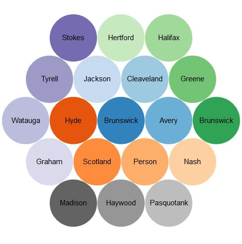

This bubble chart shows the distribution of energy sources for heating occupied housing units across 19 counties in North Carolina for the year 2010. Each county is represented by a different color. Each has a label to depict the enery source it represents. The energy source may be Gas, Tank LP, Electricity, Fuel oil, other fuel, or no heating fuel. The size of the bubble changes based on how much housing units use that particular source of energy for heating. The color of the bubble varies according to the county it represents.
It is estimated that, with pro-development policies for offshore development, the North Carolina oil and gas industry could generate more than $3.5 billion in government revenue by 2030. Wood Mackenzie
The oil and gas industry in North America today supports over 146,000 jobs and contributes more than $12.4 billion to the state's economy, representing 3% of the state's GDP. NC Energy Forum
Produces more than $3 billion in total government revenue. (Source: American Petroleum Institute). American Petroleum Institute